Strata Live Loop is a multi-track looper. Each track records and loops
audio independently — up to 8 tracks. The first loop you record becomes the main track
(marked with *) and defines the tempo grid that all other tracks quantize to.
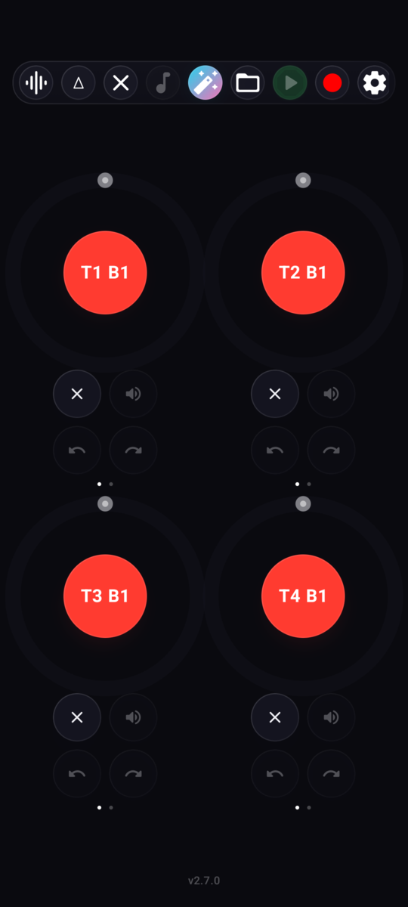
The main screen: top bar on top, one card per track, version at the bottom.
One-time setup: calibrate
Every device has different audio latency. Run Calibration
once so your loops land exactly on the grid — it only takes a tap.
Record your first loop
Tap the center button of any track — recording starts immediately and the red arc
sweeps around the ring.
Tap the center button again to close the loop. It starts playing in sync right away.
Record the next track by tapping its center button. Because a main loop now exists,
the new recording is armed — it begins exactly at the next bar boundary.
Use the Metronome before your first take — a timed first loop
keeps every layer tight. You can also render the click onto a track with
Add to Track.
2. Calibration
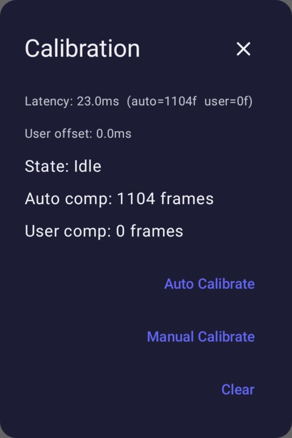
Audio input/output latency differs per device. Calibration compensates so loops land
exactly on the grid — run it once before your first take.
Latency / offsets — measured latency plus the automatic
(auto=) and manual (user=) compensations in frames and ms.
Auto Calibrate — measures round-trip latency and applies it.
Manual Calibrate — plays a metronome click, records it through
the mic, and lets you align the overlaid waveforms with ±1 ms / ±10 ms
buttons.
Clear — resets the user offset.
Re-run Auto Calibrate when you switch between the built-in mic, a headset,
or a USB audio interface — or enable Auto-Adjust Latency on Device Change in
Settings.
3. Top Bar
The top bar holds global actions plus live status indicators. It is horizontally
scrollable — swipe it to reveal every item below.
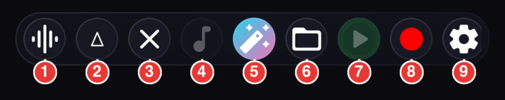
The first nine items, left to right.
Calibration — latency measurement and alignment (details).
Metronome — tempo, time signature, click loops (details).
Clear — clears all loops on all tracks.
Bar Settings — bar count per track; enabled after the main loop is recorded (details).
Effects — per-track effect chain and master volume (details).
Project — save and load sessions (details). Disabled while recording.
Play / Stop — starts or stops the whole loop engine. Enabled once any loop exists.
Record — records the live performance (audio and/or video) to a file (details).
Battery — charge level; shows a lightning bolt while charging
and turns red below 20%.
CPU meter (C:%) — audio CPU load relative to one core; green
under 70%, yellow to 90%, red above.
Dropouts — OK means clean audio;
Glitch:N counts audio dropouts (xruns).
App memory (M:MB) — app memory footprint (PSS).
System memory (T:used/total) — device RAM pressure; turns red
when the system is low on memory.
Watch 12 and 13 while looping —
sustained red or rising glitch counts mean the device is struggling; lower the
Animation FPS in Settings to lighten the load.
4. Track Card
Each track is a card with a loop ring, a center button, and a swipeable two-page menu.
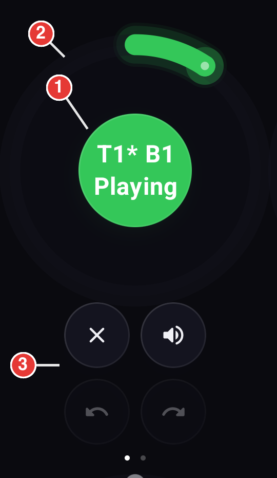
Center button — the main action. Shows track number, bar count,
and state (T1 B1 = Track 1, 1 bar). A * marks the main track.
Loop ring — shows loop progress, playhead, waveform, and the sync
marker (yellow dot: the main loop's position, where quantized actions land).
Track menu — a two-page pager of action buttons; swipe it to
switch pages (details).
Gestures
Gesture
Action
Tap center
Record → close loop → overdub → stop overdub. While a main loop exists,
tapping an empty track arms recording for the next bar boundary; tap again to cancel.
Tap ring
Mute / unmute the track instantly.
Long-press ring
Quantized mute — mute/unmute happens at the next bar boundary (button pulses
until it applies).
5. Track States
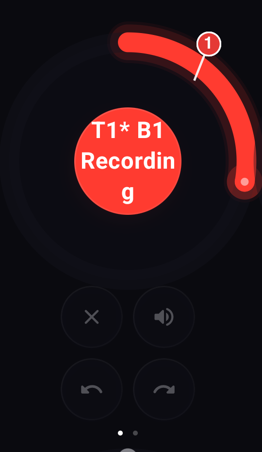
1Recording — the red arc sweeps once per
bar until you close the loop.
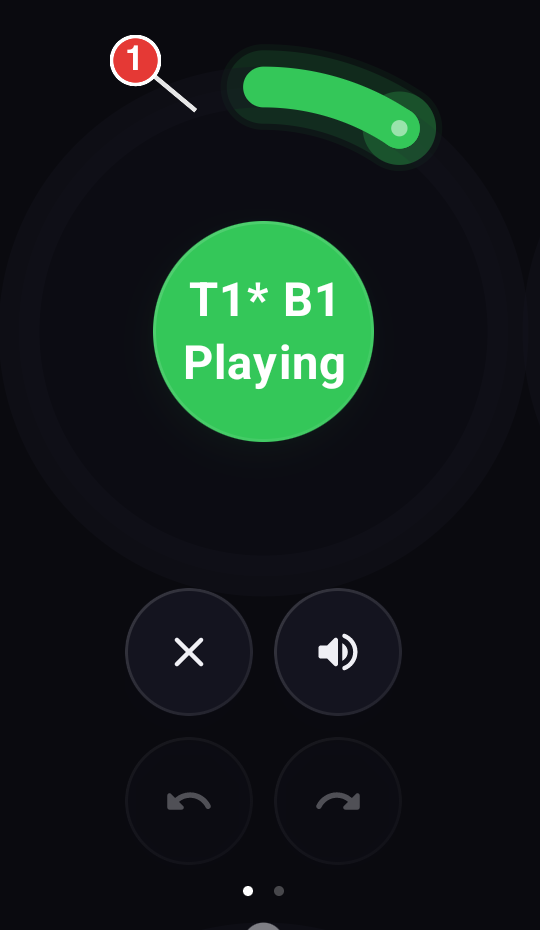
1Playing — the green arc is the playhead
moving through the loop.
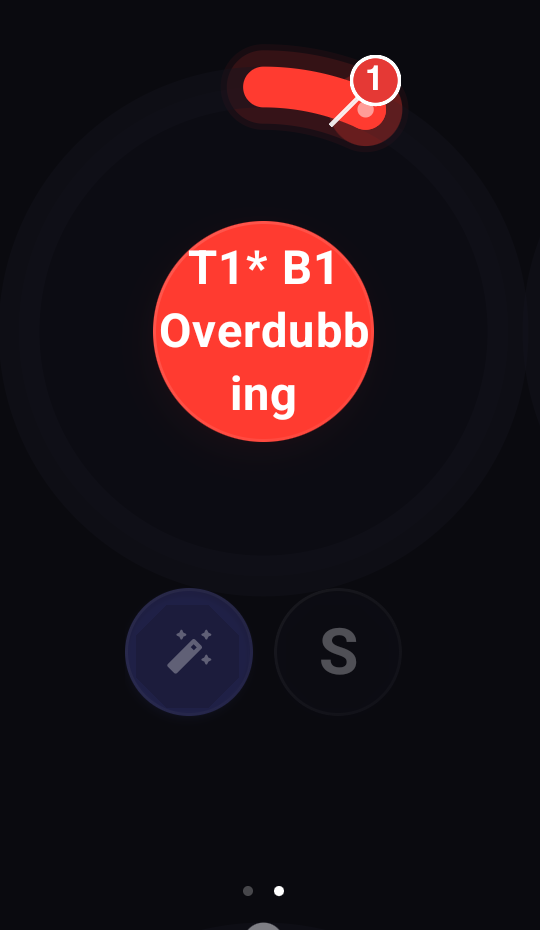
1Overdubbing — layers new audio on top of
the existing loop.
Muted tracks dim and show Muted on the center button. Queued (quantized) actions
pulse until they apply at the bar boundary.
6. Track Menu
Beneath each track card sits a two-page pager of action buttons —
swipe the button area sideways to switch pages; the dots below show the current page.
Page 1 — Edit actions
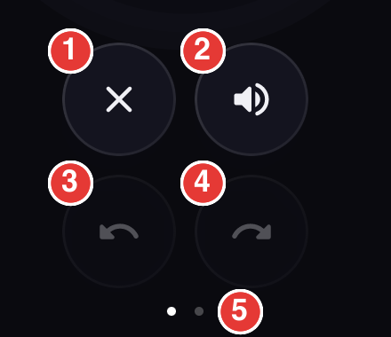
Clear — erases the track's loop and all its takes.
Overdub Volume — opens Adjust Overdub to set the gain of
the adjustable take (details).
Undo — removes the last overdub take. When the track has
no loop yet, has more than 1 bar, and the main loop is playing,
this becomes Bar Back instead.
Redo — restores an undone take, or Bar Forward under
the same conditions.
Page dots — current page; swipe left for page 2.
Bar Back / Bar Forward appear on an empty multi-bar track while the
main loop plays: they shift the track's bar-cycle start point bar-by-bar,
choosing where an armed recording lands relative to the master grid.
Adjust Overdub
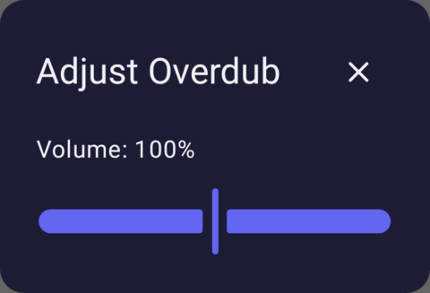
Each take keeps its own volume (0–200%). The slider edits whichever take sits on
top of the undo history — the newest overdub, or the base take when there are no
overdubs. To re-tune an earlier layer later, Undo back to it, open
Adjust Overdub, and set its level; Redo brings you forward again.
A track holds the base take plus up to 4 overdub layers. Recording a
fifth merges the oldest layer into the base take — nothing is lost, but it can no
longer be undone or adjusted separately.
Page 2 — FX & Solo
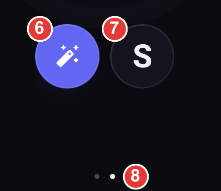
FX On/Off — enables or bypasses the track's effect chain.
Highlighted when active. Tap for instant toggle; long-press to apply at the
next bar boundary.
Solo (S) — solos the track (mutes all others). Tap for instant;
long-press for bar-boundary quantized toggle.
Page dots — current page; swipe right for page 1.
7. Metronome
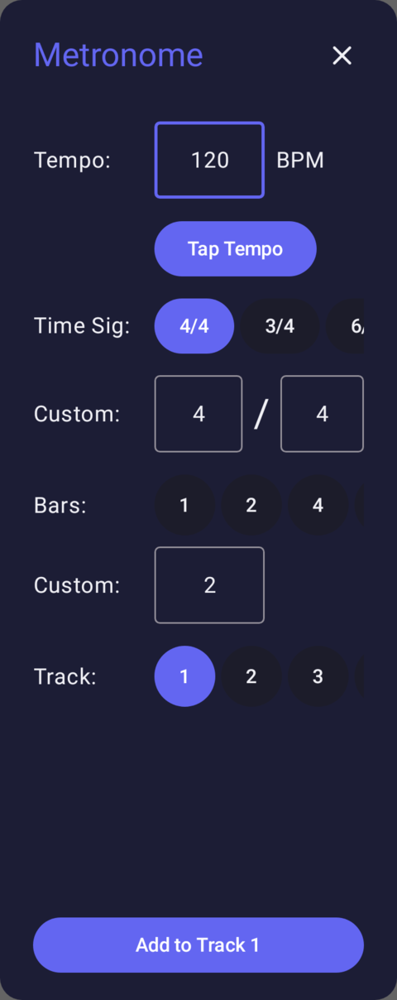
Tempo — BPM field or Tap Tempo to set it by tapping.
Time Sig — 4/4, 3/4, 6/8 or a custom signature.
Bars — click loop length: 1, 2, 4 or custom.
Track — which track the click belongs to.
Add to Track N — renders the click pattern as a loop onto that
track. With no loops yet, it becomes the main track and sets the tempo grid — the
easiest way to get a perfectly timed first take.
8. Bar Settings
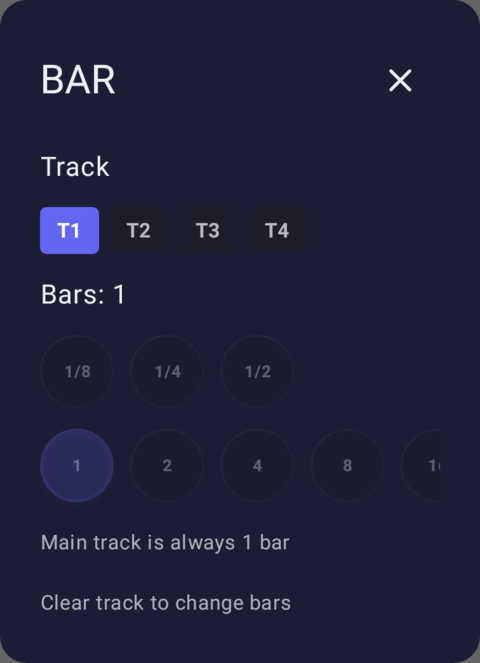
The main track
The first loop you record becomes the main track (marked
*) — its length defines one bar for the whole session. Every other
track's grid, quantized actions, and bar counts are fractions or multiples of it.
If you clear the main track, the engine promotes another track with a
loop — the one with the smallest bar count that can still represent every
remaining track. Its length becomes the new bar, and all other tracks' bar counts are
re-based so their relationships survive (e.g. a 4-bar layer next to a
2-bar main becomes a 2-bar layer). If no loops remain, everything resets.
Changing bar counts
Pick a track, then a length: 1/8, 1/4, 1/2, 1, 2, 4, 8, 16, or 32 bars of the
main bar.
The main track is always 1 bar — its own count and offset
can't be edited.
Clear the track first — bar count is locked while a loop
exists, and changing it resets the track's bar offset.
Limits: re-based counts clamp to 1/8–32 bars. If a surviving loop is too
short relative to a new main (>32:1), it is auto-muted so it
can't play a corrupted length.
Bar offset (Bar Back / Forward) is only available on
empty multi-bar tracks — never on the main track.
9. Audio Effects
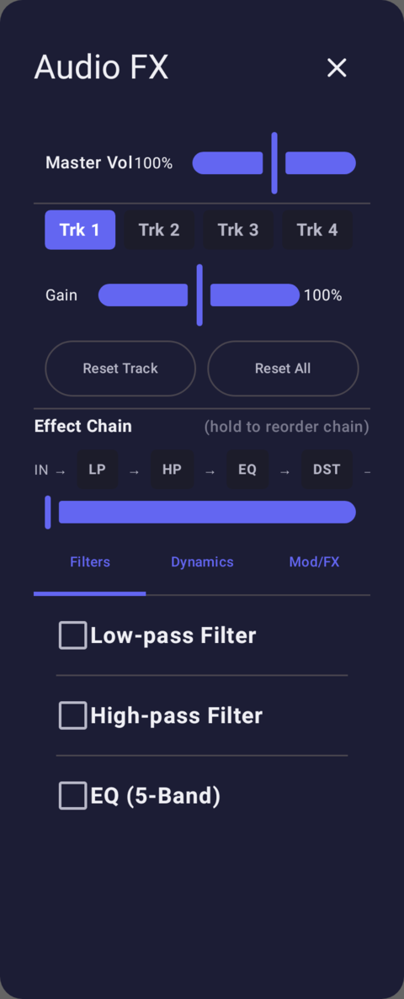
Master Vol — output volume for the whole mix.
Trk 1–8 + Gain — per-track gain, one selector per
active track. Reset Track and Reset All restore defaults.
Effect Chain — the processing order (IN → LP → HP →
EQ → DST → …). Hold and drag a block to reorder the chain.
Filters / Dynamics / Mod-FX tabs — enable effects per category:
low-pass, high-pass, 5-band EQ (100/400/1k/3k/8k Hz), compressor, distortion,
chorus, delay, auto-tune (beta), and more.
Save — name the session and store it as a .stp file:
all tracks, overdub layers, per-track FX and chain order, bar counts/offsets, mute/solo
states, master gain, and calibration.
Open / Browse .stp file… — load a saved session back onto
the tracks.
The button is only enabled when the engine is idle — stop and finish recordings first.
11. Performance Recording
The red Record button in the top bar captures your live performance to a
file — separate from loop recording.
Shows a countdown, then a blinking indicator and elapsed time while recording.
Choose Audio (WAV), Video (MP4, always with audio), or
Both (separate MP4 + WAV files), and the video/audio quality
(Low/Med/High) in the same tab.
12. Settings
Five tabs — General, Recording,
Track, Controller, About. The dialog
reopens on the last-used tab, at the same scroll position.
General
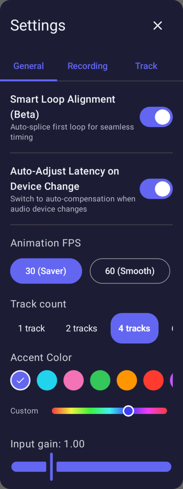
Top of the tab
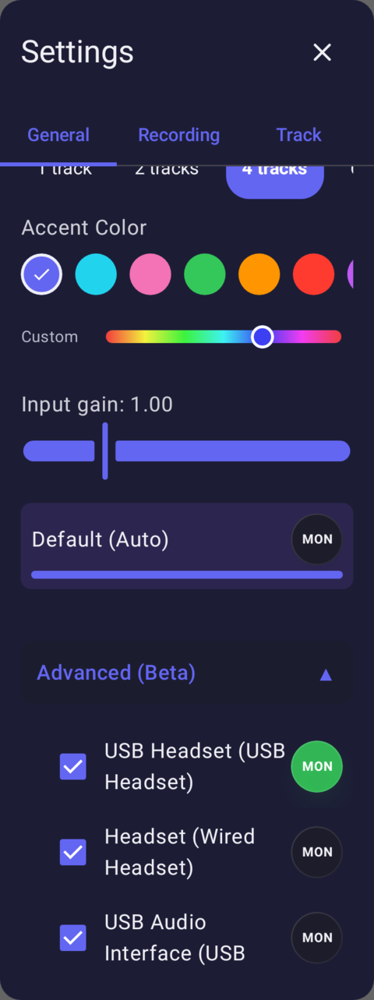
Advanced (Beta) expanded
Smart Loop Alignment (Beta) — auto-splices your first loop so
its timing lands seamlessly on the grid. On by default.
Auto-Adjust Latency on Device Change — switches to automatic
latency compensation when you plug in or unplug an audio device.
Animation FPS — 30 (Saver) or 60 (Smooth) for
the ring and waveform animations.
Track count — 1, 2, 4, 6, or 8 track cards. Locked while
any loop exists — clear all loops first.
Accent Color — 8 preset swatches or a custom hue slider;
recolors buttons, rings, and the record arc.
Input gain — recording level slider, 0–4.0×.
Default (Auto) input — the MON button toggles input
monitoring (hear your live input); the bar under the active input shows its live
level.
Advanced (Beta) — expands to list every detected input device.
Checked devices appear in the Track tab input selectors,
each with its own MON toggle.
Recording
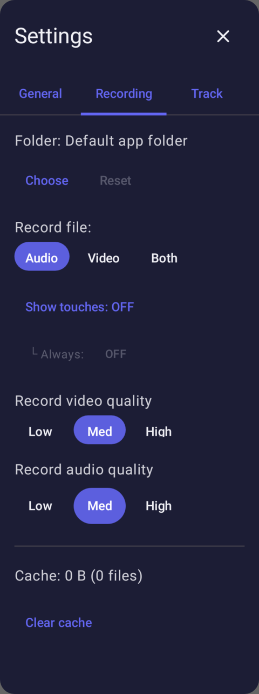
Folder — where performance
recordings are saved. Choose picks any folder via the system picker;
Reset returns to the default app folder.
Record file — what the top-bar Record button captures:
Audio saves a WAV; Video saves an MP4 (video always includes
the audio track); Both saves two separate files —
the MP4 plus a standalone WAV.
Show touches — draws tap/long-press/drag indicators into
recordings. The ⤷ Always sub-option shows them even when not
recording.
Record video quality — Low (720p · 2 Mbps),
Med (1280p · 4 Mbps), or High (1920p · 12 Mbps).
Record audio quality — Low (96 kbps), Med (192 kbps),
or High (320 kbps).
Processing — appears while a video is being muxed/saved, with
a progress bar per job. Processing continues in the background if you leave the
app.
Cache — space used by temporary recording files, with a
Clear cache button.
Track
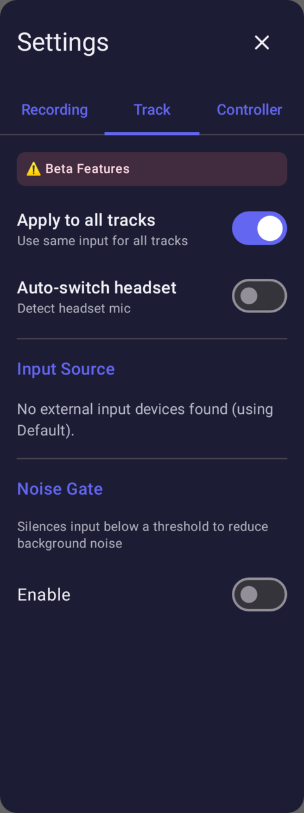
Apply to all: on
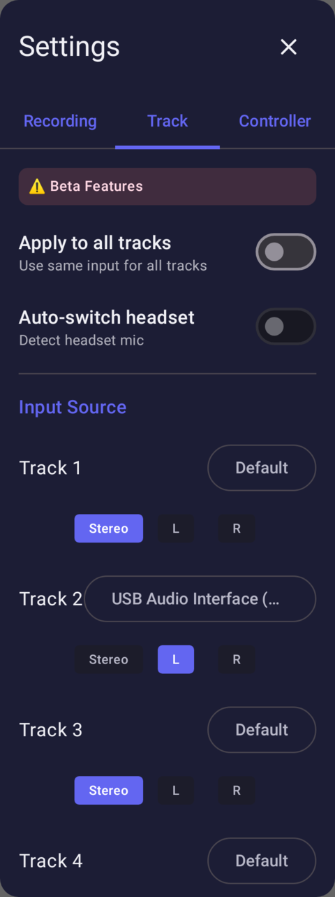
Apply to all: off
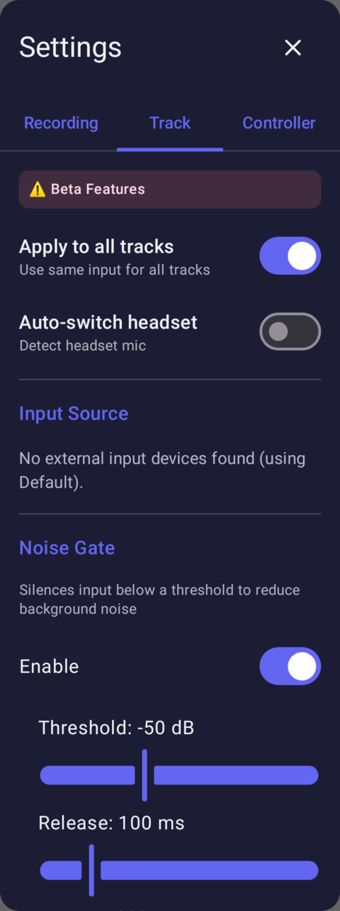
Noise Gate enabled
Apply to all tracks(beta) — use one input source for
every track instead of per-track routing. Turning it on also copies track 1's
noise-gate settings to all tracks.
Auto-switch headset(beta) — automatically selects a
headset mic when one connects. Requires Apply to all tracks; the input
picker below is disabled while it's on.
Input Source — with Apply to all: one device picker
for the whole session. Off: a picker per track, plus a Stereo / L / R
channel-routing toggle for stereo inputs (record the full stereo image, or just the
left/right channel).
Noise Gate — silences input below a threshold to cut
background noise from recordings. One global set with Apply to all, or
per-track controls:
Enable — gate on/off.
Threshold — −80 to 0 dB; input below this
level is gated.
Release — 10–500 ms; how fast the gate
closes after the signal drops.
Range — 0–100%; how much of the gated signal is
attenuated (100% = fully silent).
Controller
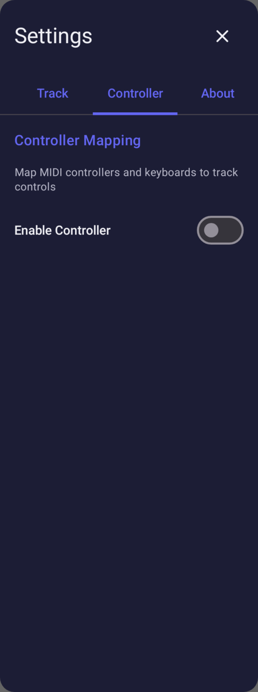
Controller off
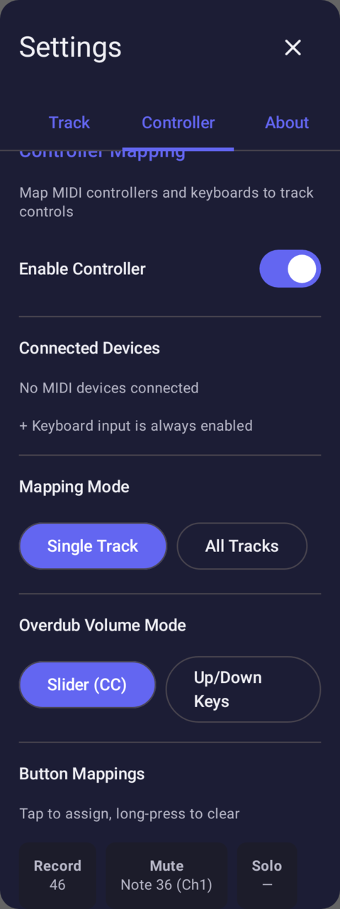
Controller enabled
Enable Controller — master switch for MIDI controllers
(USB/Bluetooth), keyboards, and gamepads.
Mapping Mode — Single Track: one set of action keys
plus track-select keys (one per track) that pick which track they drive; the selected
track shows a yellow border. All Tracks: a dedicated set of buttons for each
track.
Overdub Volume Mode — Slider (CC): map a MIDI
fader/knob to overdub volume. Up/Down Keys: use two buttons to nudge
it.
Button Mappings — tap an action to assign a key/pad,
long-press to clear. Assignable: Record, Mute, Solo, FX On/Off, Clear, Undo,
Redo, and Overdub Volume (or Up/Down).
Presets — save the current mapping under a name; reload or
delete presets from the dropdown.
About
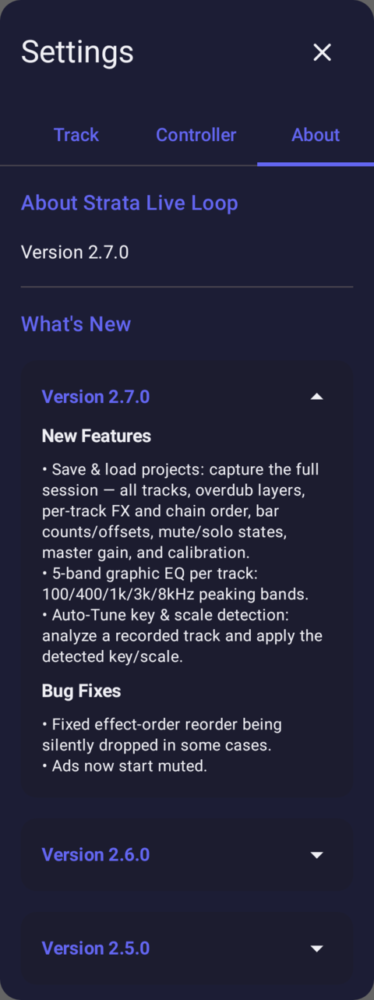
Version — installed app version.
What's New — expandable per-version changelog going back to
v1.14: new features, improvements, and bug fixes for each release.
13. Help & Tutorial
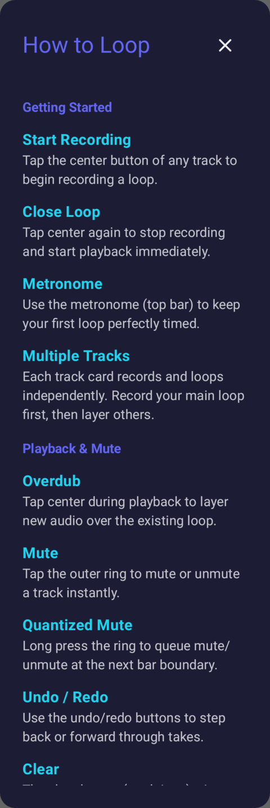
The ? button at the end of the top bar opens the built-in tutorial:
Getting Started, Playback & Mute, and Advanced quick help.
It also appears on first launch (dismiss permanently with Don't show again).
The tutorial footer contains the Full Manual button, which opens this page.
14. Manual Changelog
Each app release updates this manual. Entries below link new UI to the section that
documents it.